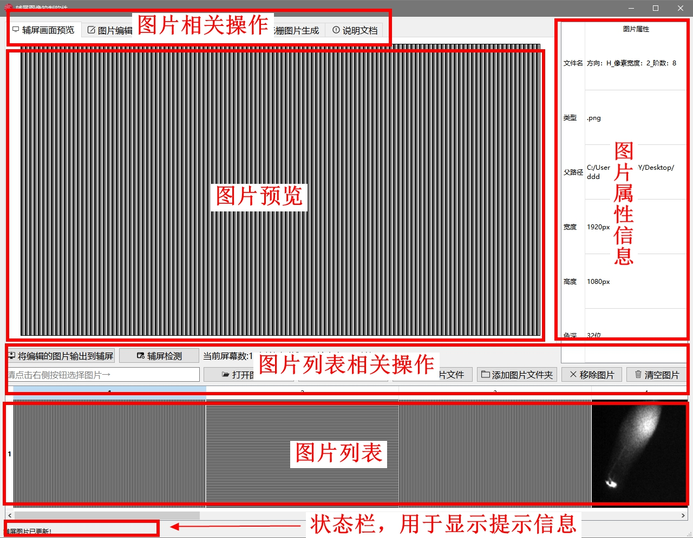
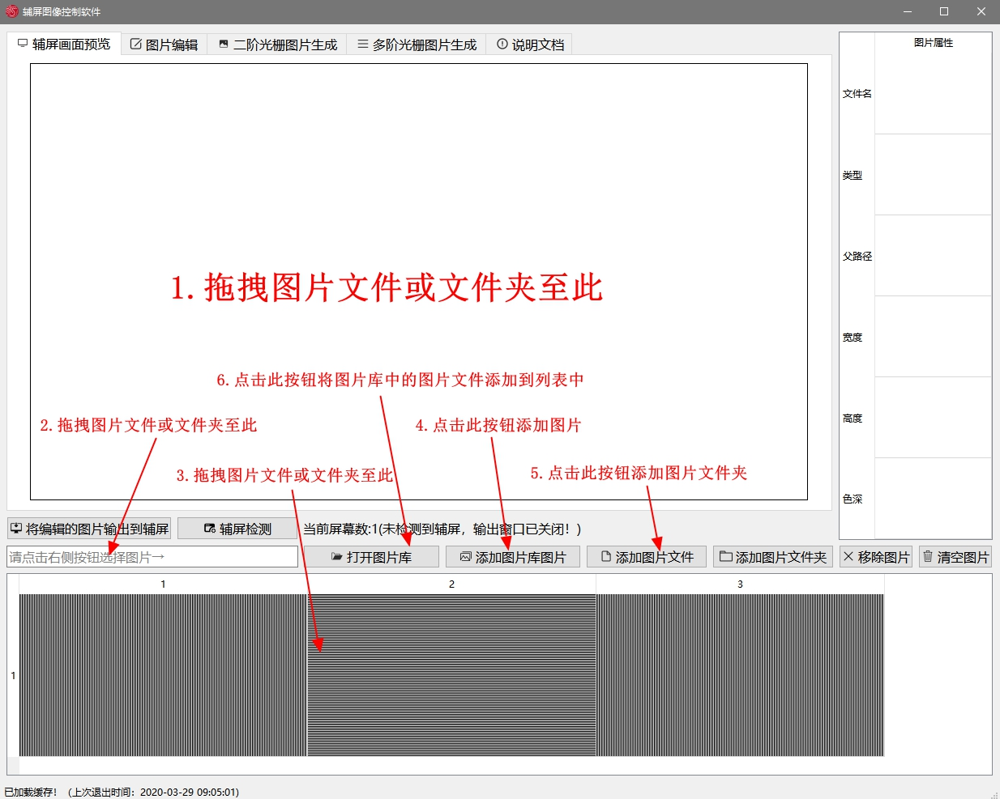
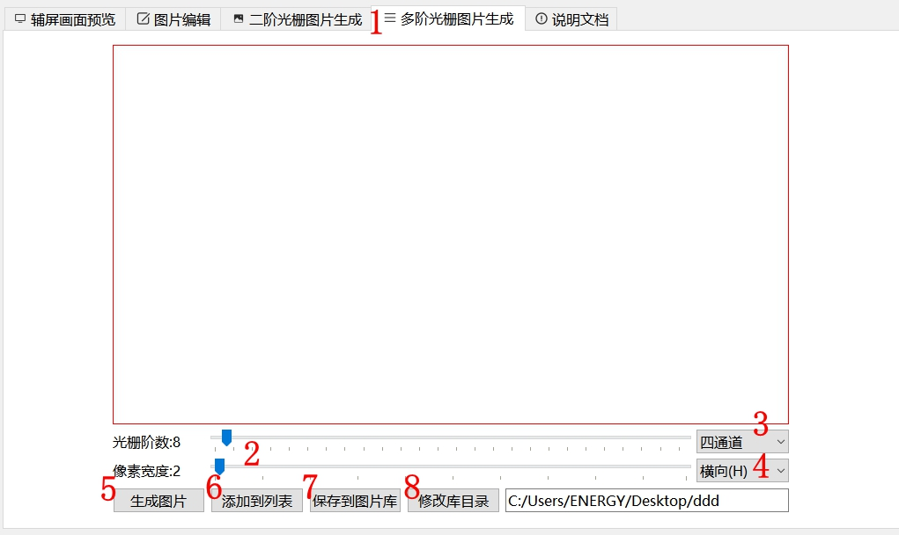

软件实现的功能：
1.采用拖拽或浏览文件夹等多种方式批量加载图片
2.实时同步辅屏画面
3.根据用户输入生成指定阶数和宽度的横向或纵向光栅图片
4.对加载的图片进行缩放、移动等基本操作，并将编辑后的图片输出到辅屏
5.软件使用[图片库]功能，将用户生成的图片统一一键保存在[图片库]目录下，同时用户能够在需要时一键批量加载[图片库]中的图片
6.在图片列表中，用户可加载多张用于输出的图像，并随意添加或删除
7.用户每次更改图片列表或异常退出时，软件会将更改缓存到本地文件，当软件启动时会自动加载缓存，避免用户重复操作
加载图片或图片文件夹有6种方式：
1.1 拖拽图片或图片文件夹至 [辅屏画面预览]或 [图片编辑]窗口
1.2 拖拽图片或图片文件夹至软件左下角的文件地址栏
1.3 拖拽图片或图片文件夹至下方的图片列表中
1.4 点击 [添加图片图库] 按钮，在打开的文件浏览对话框中选择相应的图片文件即可
1.5 点击 [添加图片文件夹] 按钮，在打开的文件浏览对话框中选择相应的图片文件夹即可
1.6 点击 [添加图片库图片] 按钮，软件自动将图片库*中的文件加载到列表中
注：图片库中保存用户在[光栅生成模块]中生成的图片
当图片通过上述方式加载完毕后可在[图片编辑]模块中对图片如下操作：
1.1 鼠标滚轮向上滚动图片放大，向下滚动图片缩小
1.2 拖拽鼠标实现图片的移动
1.3 拖拽图片或图片文件夹至下方的图片列表中
1.4 鼠标点击右键 可将图片重置
1.5 编辑完图片后，可点击[将编辑的图片输出到辅屏]按钮将编辑后的图片输出到辅屏
1.6 点击完列表中的图片，在未编辑图片的情况下点击[将编辑的图片输出到辅屏]按钮，软件会将所选图片以全屏的方式图片输出到辅屏
注：1.在[图片编辑]模块下，图片将以缩放的形式自适应的展示在[图片编辑]窗口下，并非原始图片尺寸，若要将原始尺寸的图片输出到辅屏请再次在列表中点击图片
注：2.在辅屏中默认以居中的方式输出图片，因此在图片小于显示框的情况下，辅屏会和图片编辑框的图片产生位移（移到中央显示）
生成步骤：
1.用户点击[多阶光栅图生成]模块
2.用户通过滑块设置光栅图片中光栅阶数和每阶光栅的宽度
3.用户通过下拉列表设置生成图片的通道数（此设置暂时不可用）
4.用户通过下拉列表设置光栅条纹的排布方向（横向或纵向）
5.用户点击[生成图片]并等待状态栏提示“图片生成成功！”，此时页面会显示生成的光栅图片
6.（可选）用户点击[添加到列表]，软件会将生成的图片添加到图片列表中
7.（可选）用户点击[添加图片库]，软件会将生成的图片保存到图片库目录下，此后可在需要时一键批量载入
图片输出有三种方式：
1.在图片列表存在图片的情况下，用户在图片列表中点击相应图片后，软件会将图片输出到辅屏
2.当用户在图片列表中选择相应图片后，用户在图片编辑模块下编辑图片，然后点击[将编辑的图片输出到辅屏]，软件会将编辑好的图片输出到辅屏
3.当用户在图片列表中选择相应图片后，未编辑图片，然后点击[将编辑的图片输出到辅屏]，软件会将所选图片以全屏的形式输出到辅屏